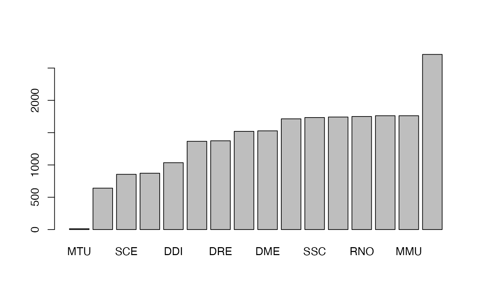
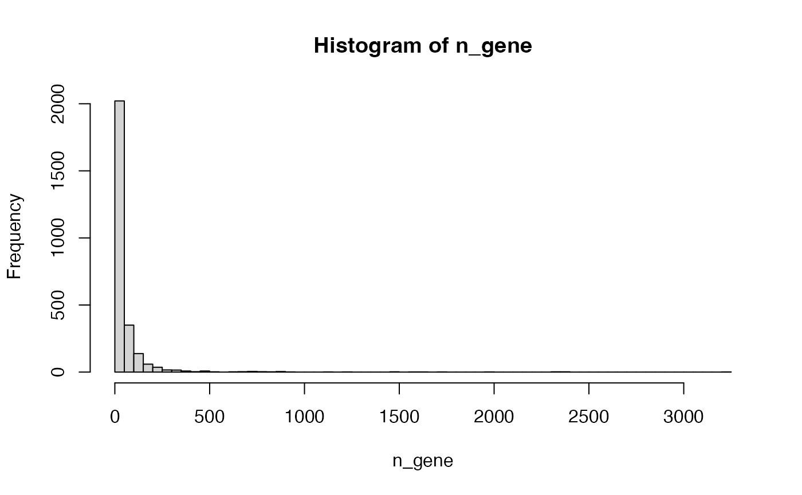

Topic 1-04: Get pathways from Reactome
Zuguang Gu z.gu@dkfz.de
2025-03-02
Source:vignettes/topic1_04_Reactome.Rmd
topic1_04_Reactome.RmdReactome is another popular pathway database. It organises pathways in a hierarchical manner, which contains pathways and sub pathways or pathway components. The up-to-date pathway data can be direclty found at https://reactome.org/download-data.
reactome.db
There is a reactome.db on Bioconductor.
The version of the data:
library(reactome.db)## Loading required package: AnnotationDbi## Loading required package: stats4## Loading required package: BiocGenerics##
## Attaching package: 'BiocGenerics'## The following objects are masked from 'package:stats':
##
## IQR, mad, sd, var, xtabs## The following objects are masked from 'package:base':
##
## anyDuplicated, aperm, append, as.data.frame, basename, cbind,
## colnames, dirname, do.call, duplicated, eval, evalq, Filter, Find,
## get, grep, grepl, intersect, is.unsorted, lapply, Map, mapply,
## match, mget, order, paste, pmax, pmax.int, pmin, pmin.int,
## Position, rank, rbind, Reduce, rownames, sapply, saveRDS, setdiff,
## table, tapply, union, unique, unsplit, which.max, which.min## Loading required package: Biobase## Welcome to Bioconductor
##
## Vignettes contain introductory material; view with
## 'browseVignettes()'. To cite Bioconductor, see
## 'citation("Biobase")', and for packages 'citation("pkgname")'.## Loading required package: IRanges## Loading required package: S4Vectors##
## Attaching package: 'S4Vectors'## The following object is masked from 'package:utils':
##
## findMatches## The following objects are masked from 'package:base':
##
## expand.grid, I, unname
reactome.db## ReactomeDb object:
## | DBSCHEMA: REACTOME_DB
## | DBSCHEMAVERSION: 89
## | SOURCENAME: Reactome
## | SOURCEURL: https://reactome.org/download/current/databases/gk_current.sql.gz
## | SOURCEDATE: 19997
## | Supporting package: AnnotationDbi
## | Db type: ReactomeDb##
## Please see: help('select') for usage informationIn it, the important objects are
-
reactomePATHID2EXTIDcontains mappings between reacotme pathway IDs and gene entrez IDs -
reactomePATHID2NAMEcontains pathway names
## DB_ID gene_id
## 1 R-HSA-109582 1
## 2 R-HSA-114608 1
## 3 R-HSA-168249 1
## 4 R-HSA-168256 1
## 5 R-HSA-6798695 1
## 6 R-HSA-76002 1## DB_ID
## 1 R-BTA-1971475
## 2 R-BTA-1369062
## 3 R-BTA-382556
## 4 R-BTA-9033807
## 5 R-BTA-418592
## 6 R-BTA-392170
## path_name
## 1 Bos taurus: A tetrasaccharide linker sequence is required for GAG synthesis
## 2 Bos taurus: ABC transporters in lipid homeostasis
## 3 Bos taurus: ABC-family proteins mediated transport
## 4 Bos taurus: ABO blood group biosynthesis
## 5 Bos taurus: ADP signalling through P2Y purinoceptor 1
## 6 Bos taurus: ADP signalling through P2Y purinoceptor 12In the previous code, we use the function toTable() to retrieve the data as a data frame. You can also try as.list() on the two objects and compare the output.
Reactome contains pathway for multiple organisms. In the reactome ID, teh second section contains the organism, e.g. in previous output HSA.
##
## MTU PFA SCE SPO DDI CEL DRE XTR DME CFA SSC BTA RNO GGA MMU HSA
## 13 641 855 872 1035 1366 1374 1520 1528 1714 1734 1742 1750 1762 1762 2711
Practice
Practice 1
Make the distribution of the numbers of genes in Reactome pathways (use human).
Print the names of pathways with numbers of genes > 2000.
Solution
tb = toTable(reactomePATHID2EXTID)
tb = tb[grep("-HSA-", tb[, 1]), ]
n_gene = table(tb[, 1])
hist(n_gene)
Making the intervals smaller is better:
hist(n_gene, nc = 100)
Pathways more than 2000 genes:
n_gene[n_gene > 2000]##
## R-HSA-1430728 R-HSA-162582 R-HSA-1643685 R-HSA-168256 R-HSA-392499
## 2347 3231 2304 2394 2387Their names:
## DB_ID path_name
## 11250 R-HSA-1643685 Homo sapiens: Disease
## 11665 R-HSA-168256 Homo sapiens: Immune System
## 11905 R-HSA-1430728 Homo sapiens: Metabolism
## 11923 R-HSA-392499 Homo sapiens: Metabolism of proteins
## 12694 R-HSA-162582 Homo sapiens: Signal TransductionIf you go to https://reactome.org/PathwayBrowser/, these big pathways correspond to the pathway clusters on the top level.